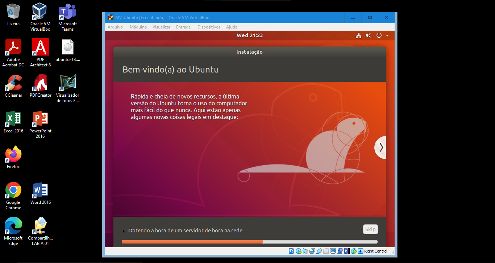

-
Passo 1. Entrar no link https://www.virtualbox.org/ e efetuar a instalação do Virtual Box;
- Passo 2. Quando o processo de instalação for concluído localize o Virtual Box em sua área de trabalho e inicialize ele;
-
Passo 3. Ao abrir o Virtual box, aperte o Botão novo para iniciar o processo de criação de uma nova máquina virtual;
-
Passo 4. Ao pressionar o botão novo, abrirá um pop-up para iniciar a criação da sua nova máquina virtual. Insira o nome que deseja dar a ela e a pasta em que a mesmo irá se localizar;
Obs.: Ao insirir o nome, colocando o sistema que operacionar que será utilizado a máquina virtual selecionará o tipo e a versão do SO automaticamente.
-
Passo 5. O próximo passo é definir o tamanho da memória. O tamanho aceitável para conseguir usar o Ubuntu é de 4096MB, mas se tiver mais memória disponível pode aumentar o tamanho;

-
Passo 6. Próximo passo é configurar o disco rígido. Nesse passo será assinalado a opção "criar um novo disco rígido virtual agora" (opção 2);
-
Passo 7. Agora é a configuração do do tipo de arquivo de disco rígido, o qual será assinalada a opção VDI (VirtualBox Disk Image) (opção 1);
-
Passo 8. Em relação ao armazenamento em disco rígido físico será assinalada a opção "Dinamicamente alocado";
-
Passo 9. Agora vamos configurar localização e tamanho do arquivo, nessa etapa vai ser aumentado para 100,00 GB;
-
Passo 10.
Agora nossa máquina virtual já foi criada, para os próximos passos vamos efetuar o download do ubuntu que pode ser feita a partir do site
https://ubuntubr.com.br/download/.;
-
Passo 11.
Efetuado o download, vamos incluir do arquivo no Disco Óptico localizado no tópico "Armazenamento". Ao clicar em cima do "Disco Óptico", vamos
escolher a opção "Escolher uma imagem de disco..." e selecionar o arquivo do Ubutu.
-
Passo 12.
Podemos inicializar a nossa máquina virtual apertando o botão "iniciar" no menu superior da tela. Ao carregar, vamos parar o próxima passo, que é a instalação do Ubuntu
na nossa máquina virtual.
-
Passo 13.
Efetue a escolha do idioma de sua preferência. Se escolher Português(Brasil), pode efetuar o teste de digitar "ç" e "á" para verificar se o teclado
está configurado corretamente
-
Passo 13.
Na etapa de "Atualizações e outro software", vai ser assinalada o opção "instalação normal" e "Baixar atualização enquanto instala Ubuntu"
-
Passo 13.
Na etapa de "Tipo de instalação", vai ser assinalada o opção "apagar disco e reinstalar o Ubuntu".
Obs.: Quando aparecer o pop-up perguntando se deseja continuar com uma lista de mudanças, pode seguir.
-
Passo 14.
Na etapa da instalação vai ser criado também o usuário. Insira o seu nome, escolha um nome para seu usuário e uma senha para efetuar o login.
-
Passo 15.
Após isso é só esperar a instalação e efetuar o login.
